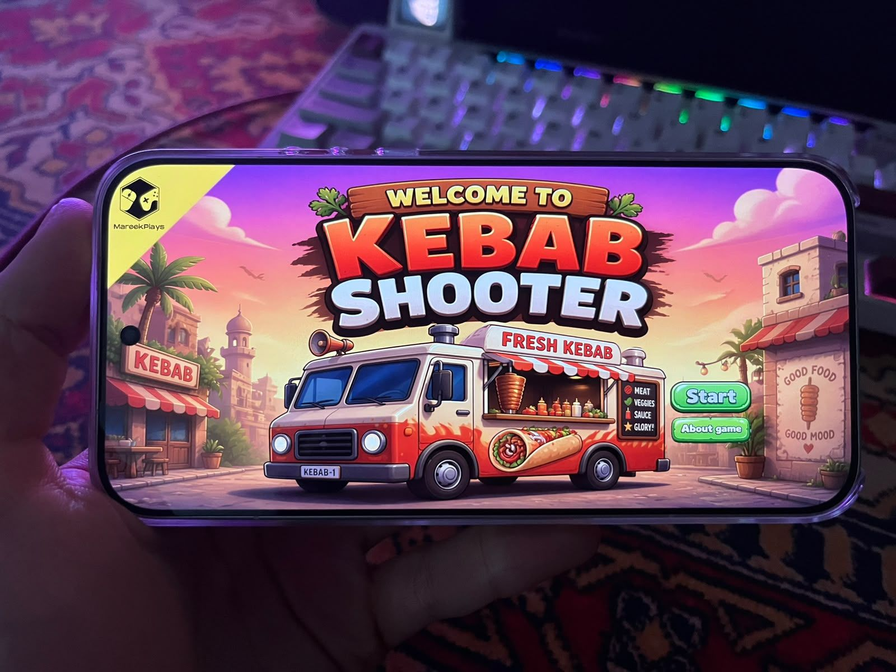
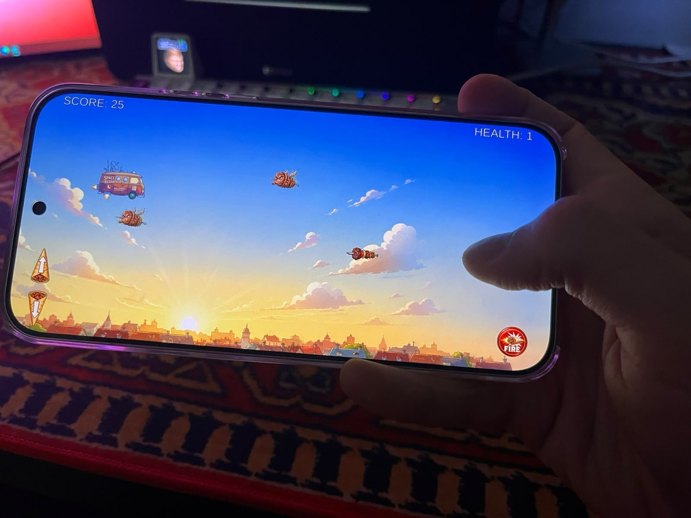
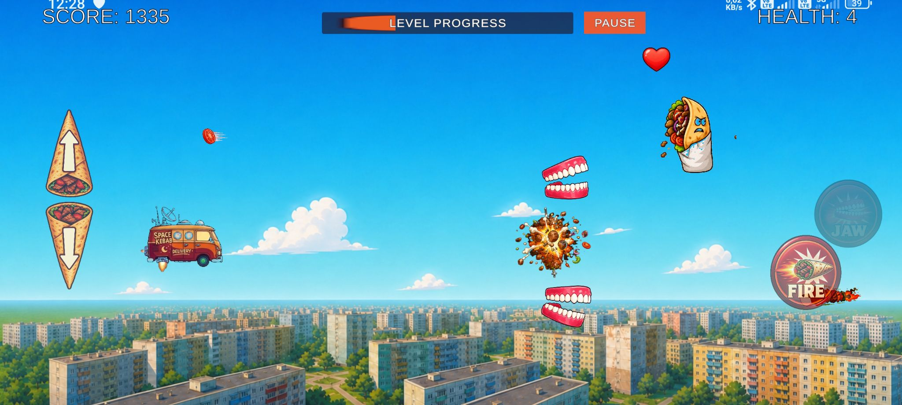
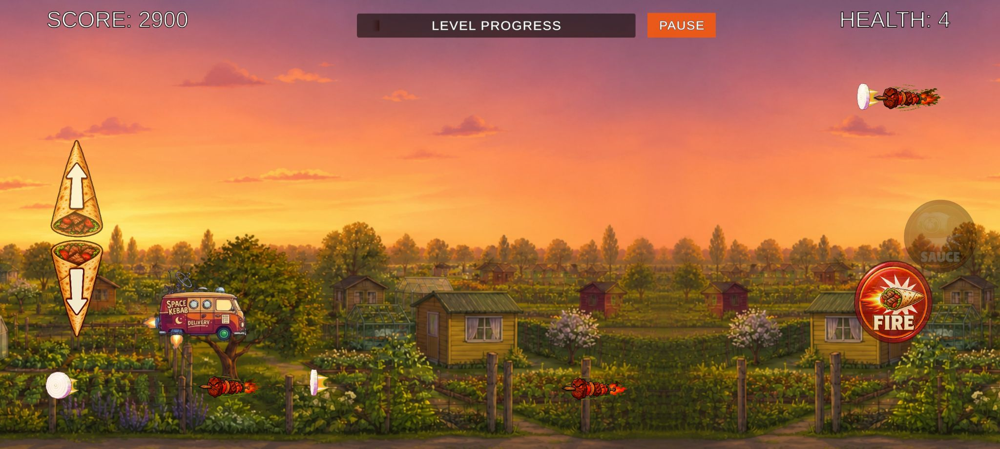

ORYGINALNY PROJEKT MAREEKPLAYS • ANDROID • WCZESNY BUILD
Kebab
Shooter.
Szybko, kolorowa gra akcji 2D o kebabach!, przetrwaj ten chaos w swoim foodtrucku, zbieraj najwyszy score oraz monety aby ulepszać pojazd i siać zniszczenie!— trwają wczesne testy na platformie Android.
Zobacz gameplay ↗
POMYSŁ
Mała gra.
Wielki smak.
Kebab Shooter to niezależna gra 2D tworzona obecnie przez MareekPlays. Łączy zręcznościową akcję, pełen humoru świat food trucków i charakterystyczne, autorskie poczucie humoru.
Pierwszą planowaną platformą jest Android. Obecny build jest testowany na urządzeniach mobilnych, a gameplay, sterowanie i balans nadal są rozwijane.
TESTOWY BUILD NA ANDROIDZIE
Zobacz świat.




CO DALEJ
Następne
etapy.
01Testy wczesnego buildu na Androidzie
02Dopracowanie gameplayu i sterowania
03Plany kolejnych platform
Chciałbym te wydać grę na PC i SteamDeck